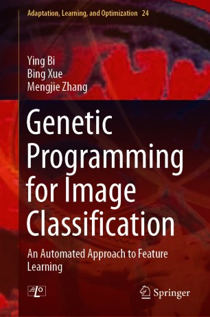

|
Welcome to Ying Bi's homepage!
|
|
Dr. Ying Bi
Postdoctoral Research Fellow and Project Coordinator
School of Engineering and Computer Science(SECS),
Victoria University of Wellington (VUW), Wellington, New Zealand
Email: Ying.Bi@ecs.vuw.ac.cn
Address: Rm CO351, School of Engineering and Computer Science, Victoria University of Wellington,
PO Box 600, Wellington 6140, New Zealand
|
New Book
|
 |
Genetic Programming for Image Classification: An Automated Approach to Feature Learning
Author: Ying Bi, Bing Xue, and Mengjie Zhang.
XXVIII, 258pp. Springer International Publishing, 2021
DOI: https:doi.org10.1007978-3-030-65927-1
It is the first book on Genetic Programming for Image Classification.
[Book Link] [Book Code]
|
Call for Papers and Events
News
Research Interests
My main research lies in Artificial Intelligence, Machine Learning, Computer Vision, and Evolutionary Computation.
Evolutionary computer vision, particularly image classification and analysis
Evolutionary computation, particularly genetic programming, particle swarm optimisation, surrogate-assisted evolutionary algorithms
Evolutionary machine learning, ensemble learning and transfer learning
Evolutionary multi-objective optimisation
Feature extraction, feature construction, and feature learning
Applications of Evolutionary Computation, including image analysis, fault diagnosis, remote sensing image analysis, aquaculture data analysis, and others
|